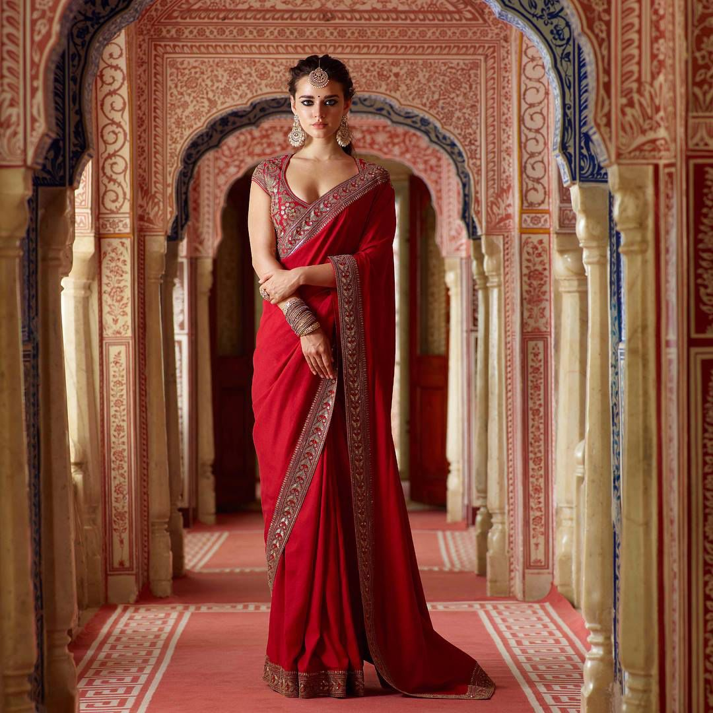
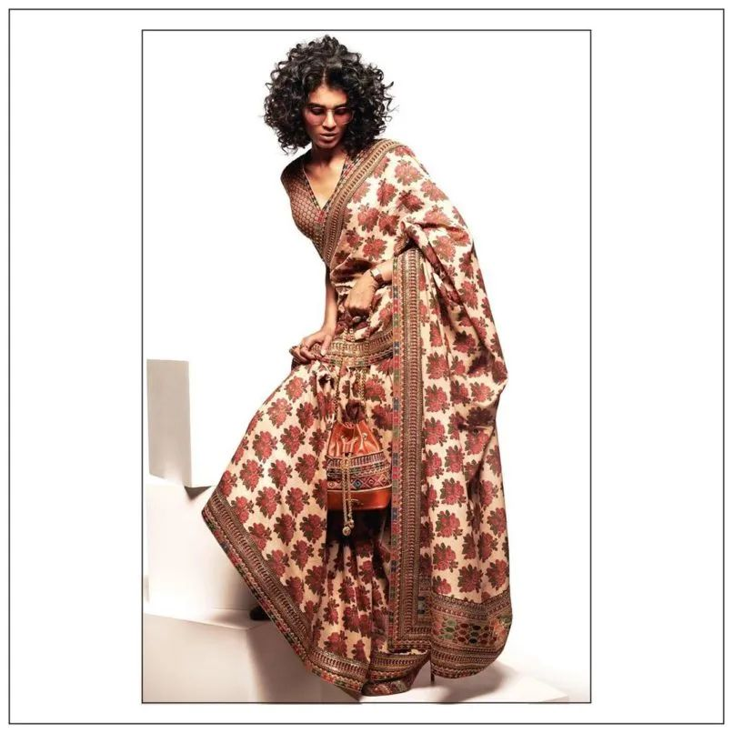
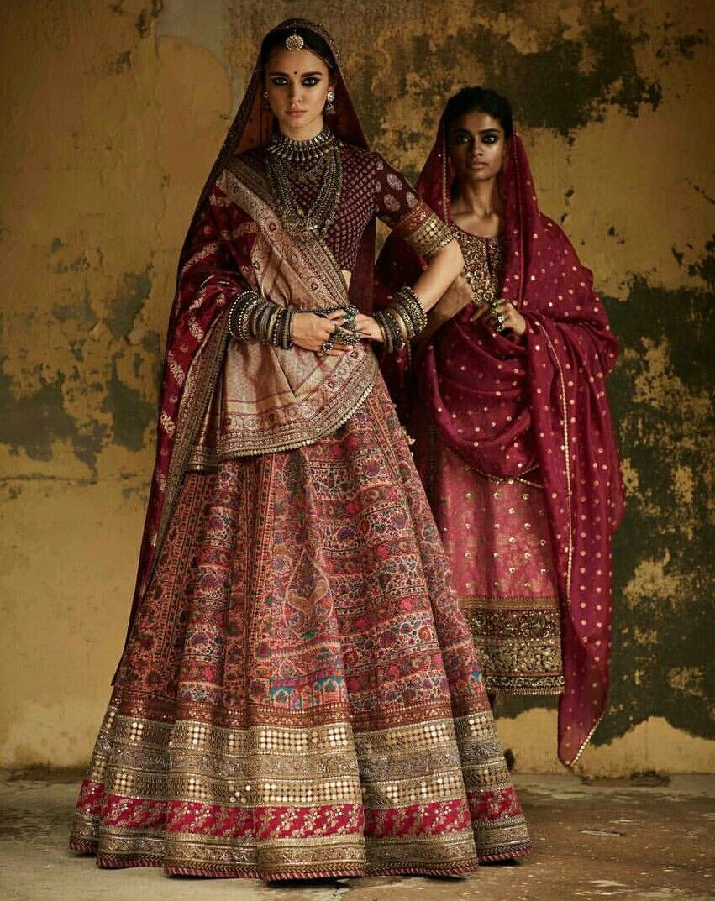

The Craft Map of Sabyasachi (and What It Taught Me)
Studying Sabyasachi opened my eyes to how one designer can unite multiple craft regions under a single aesthetic identity.
A. Weaving Traditions That Built His Textiles
1. Benarasi Silk Weaving
His bridal couture often uses Kadhua weaving, where motifs are inserted individually into the loom. When I read how a single brocade panel can take days to weave, I finally understood what craftsmanship truly means. The butidar zari work adds ceremonial weight to his lehengas while still carrying a handmade warmth.
2. Khadi from Bengal
Khadi is not just a fabric; it’s a political and cultural textile. When I touched khadi samples during class, I recognised the same irregular textures that Sabyasachi highlights in his blouses, sari borders, and menswear kurtas. He treats khadi’s imperfections as beauty—something that changed the way I personally see textiles.
3. Tussar & Matka Silk
These silks have a tactile, grainy character. By observing them, I understood why Sabyasachi prefers them—they hold embroidery beautifully and drape with quiet dignity. They taught me how fabric fall influences silhouette and craftsmanship.
⸻
B. Embroidery Narratives I Learned to Read
1. Zardozi
Before studying his work, zardozi felt like “just heavy bridal work.” But
Sabyasachi’s muted, antique gold zardozi—often couched by
hand—made me recognise how surface ornamentation can
communicate age, royalty, and intimacy.
2. Aari & Resham
His fine aari needlework forms Mughal-inspired trellises and floral vines.
When I practised aari in class, I realised how much precision goes
into the evenness of the stitches. The designer’s use of matte resham
threads taught me how thread sheen can change the mood of a
garment.
3. Gota Patti & Parsi Gara
His lighter festive lines use gota appliqué from Rajasthan, while his elite saris feature Parsi Gara satin-stitch florals. Understanding these helped me map how one designer balances regional identities within one cohesive collection.
⸻
C. Dyeing & Printing Techniques
Learning about Bagru and Sanganeri block printing gave me
a clearer understanding of natural dye absorbency and
block alignment. Sabyasachi often uses these prints in
resort wear, tying everyday craft to luxury branding. He also
introduces Bandhej tie-dye to create saturated, festive
palettes—a reminder that colour psychology is as culturally
specific as it is aesthetic.
⸻